01. Pilih produk dan varian
Buka halaman produk, lihat foto, lalu pilih Standard atau Premium. Dalam contoh ini digunakan produk DEMO dengan harga Rp100.000.
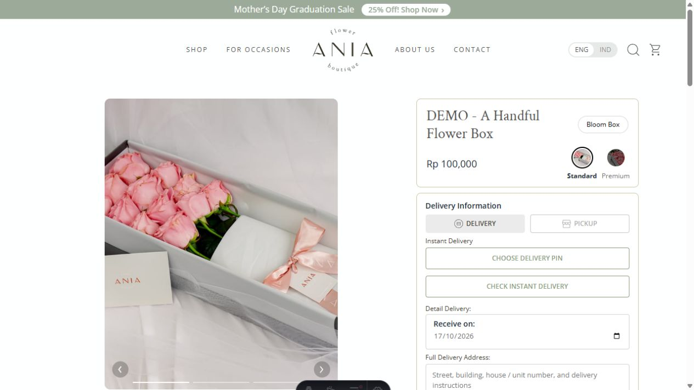
Contoh yang sama digunakan dari awal sampai akhir: ANIA-933F9C. Produk Rp100.000 + ongkir Grab Instant Rp30.000 = Rp130.000. Nama, nomor, dan alamat penerima adalah data fiktif.
Klik foto untuk melihat ukuran asli. Browser juga dapat mencetak halaman ini menjadi PDF. Screenshot adalah tampilan aplikasi apa adanya; tidak diedit untuk mengubah status.
Buka halaman produk, lihat foto, lalu pilih Standard atau Premium. Dalam contoh ini digunakan produk DEMO dengan harga Rp100.000.

Pilih Delivery > Choose delivery pin. Pelanggan dapat memakai lokasi perangkat dengan izin, atau memilih pin di peta. Contoh ini memasukkan koordinat fiktif lalu klik Find > Use this pin; tidak meminta lokasi pengguna.
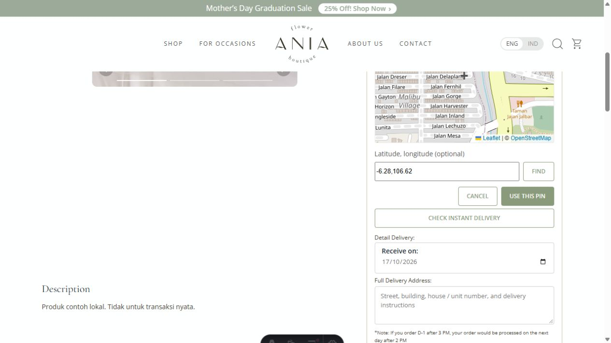
Isi tanggal penerimaan, alamat lengkap, nama pemesan, dan WhatsApp. Email opsional. Klik Check Instant Delivery untuk memeriksa layanan dan biaya, lalu Check Out Now untuk membuka keranjang.
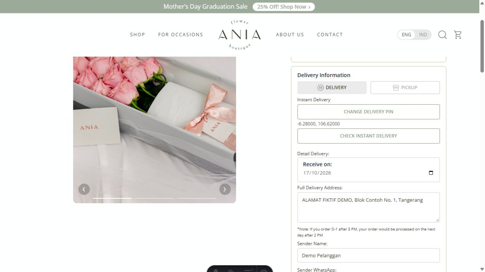
Pastikan produk, jumlah, alamat, dan kontak benar. Di keranjang klik Check Instant Delivery, pilih kurir Instant, lalu cek total. Contoh: bunga Rp100.000 + ongkir Rp30.000 = Rp130.000. Klik Proceed to Checkout.
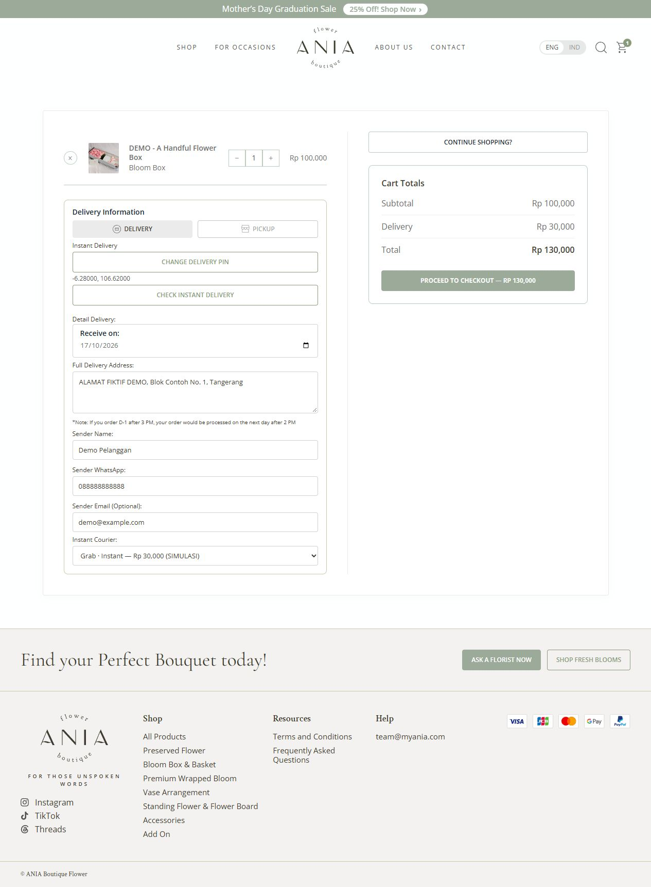
Khusus demo: portal lokal menampilkan label LOCAL MOCK, bukan halaman Xendit. Klik Simulasikan pembayaran berhasil. Tombol mengirim callback PAID simulasi melalui handler webhook aplikasi. Pada transaksi nyata, pelanggan membayar di halaman resmi Xendit menggunakan metode pembayaran yang tersedia.
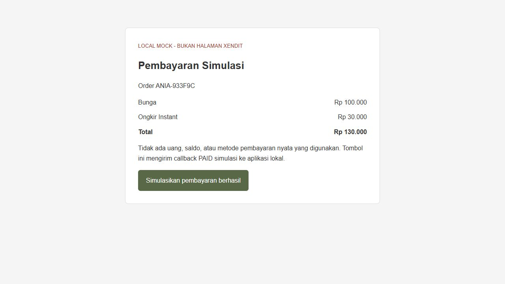
Halaman order berubah menjadi Lunas - pesanan diproses. Total yang dibayar sudah mencakup ongkir. Pembayaran tidak langsung memanggil kurir: admin perlu menyiapkan bunga dahulu.
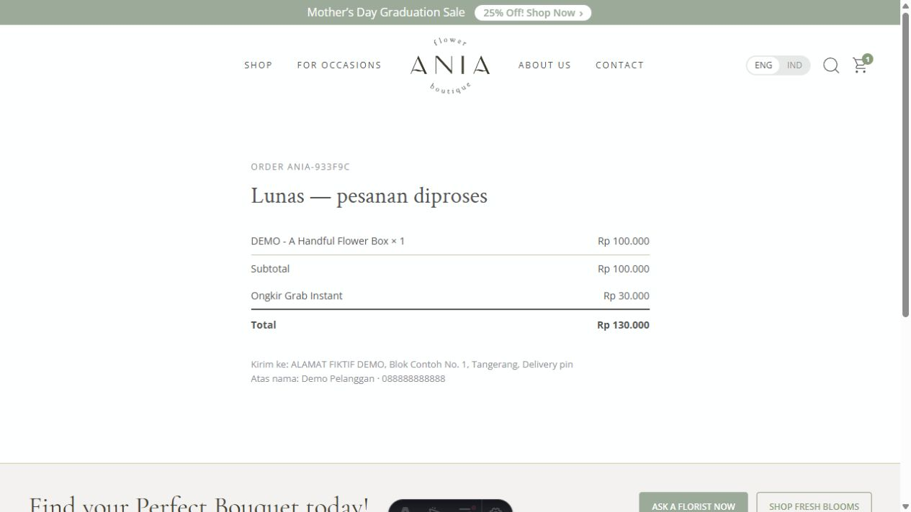
Buka CMS > Order. Cocokkan kode ANIA-933F9C, nama pelanggan, total, dan status paid, lalu klik kode order.
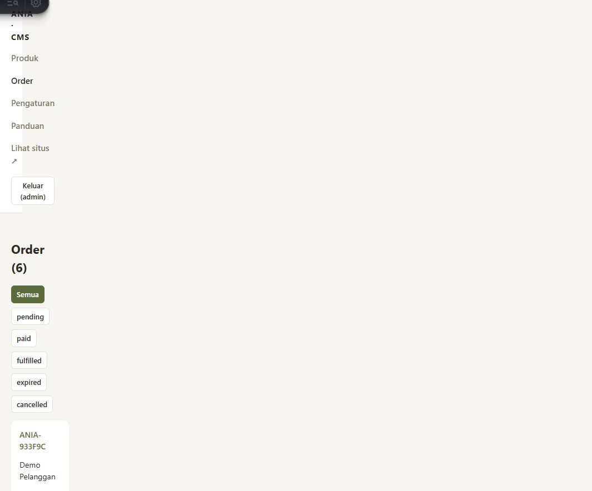
Periksa item, tanggal yang diminta, alamat, pin, dan asal pickup Bloomingfields CR6, The HOOD Tangerang. Pastikan rangkaian siap dan sesuai untuk motor. Nama penerima awal mengikuti pemesan; ubah bila orangnya berbeda. Klik Cek tarif sebelum pesan hanya ketika siap mengirim.
Status paid manual tidak menggantikan konfirmasi pembayaran provider. Booking membutuhkan data pembayaran terkonfirmasi yang tersimpan oleh webhook.
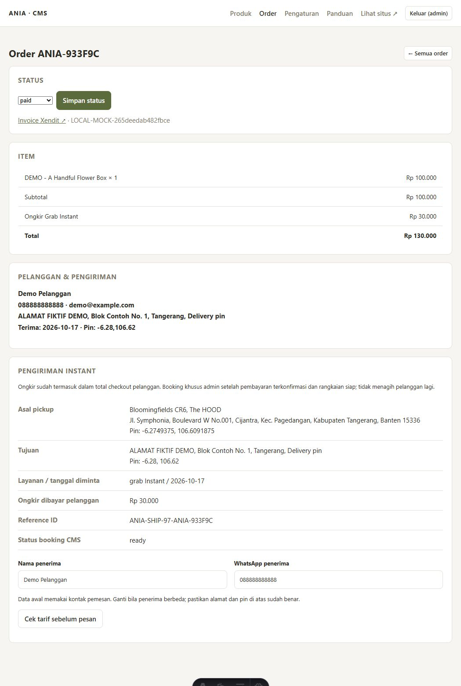
Periksa kontak pickup, penerima, tujuan, tanggal, tarif terbaru, dan selisih dengan ongkir yang dibayar pelanggan. Konfirmasi berlaku 90 detik. Centang pemeriksaan lalu klik Pesan Kurir Instant.
Penting: booking meminta kurir sekarang, bukan menjadwalkan otomatis sesuai tanggal permintaan. Contoh tanggal di screenshot adalah data demo; jangan booking pesanan masa depan sebelum siap. Pada live, booking memakai saldo Biteship toko dan tidak menagih pelanggan kedua kali.
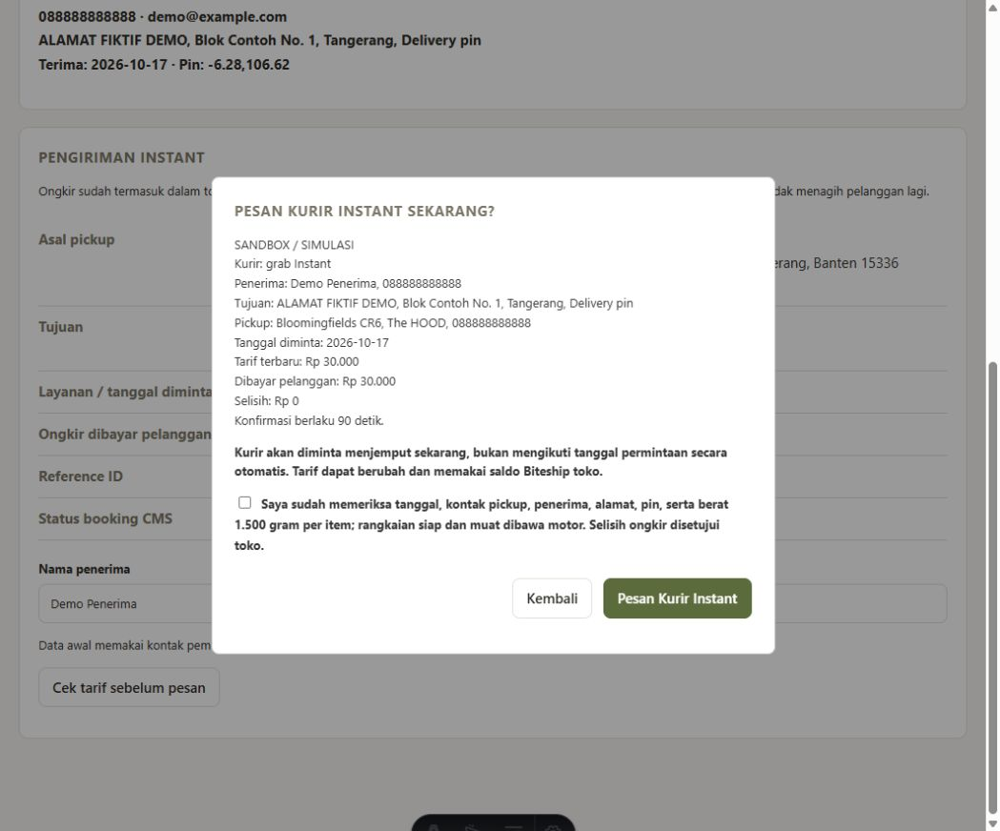
CMS menampilkan booked (test), ID mock_..., resi MOCK-1, dan status kurir confirmed. Ini penanda simulasi, bukan resi nyata. Setelah booking berhasil, jangan membuat booking lain untuk pesanan yang sama.
Klik Sinkronkan status Biteship. Contoh hasil picking_up: kurir menuju lokasi pickup. Sinkronisasi membaca status, tidak membuat booking baru.
Status berikutnya dropping_off: barang sedang diantar. Dalam demo setiap klik sinkronisasi memajukan status; pada live perubahan mengikuti kondisi sebenarnya dari Biteship, bukan jumlah klik.
Sinkronkan dan pastikan status kurir delivered. Pada operasional nyata, periksa bukti atau konfirmasi penerimaan sesuai prosedur toko. Screenshot ini tidak membuktikan barang benar-benar diterima karena seluruh perjalanan kurir masih mock.
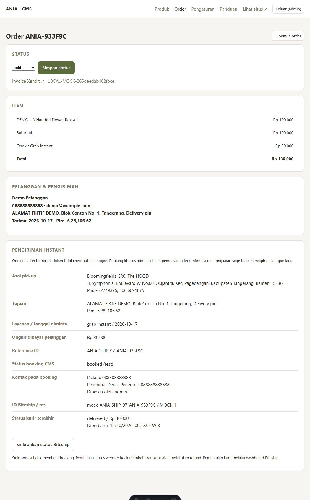
Setelah memastikan pesanan diterima, ubah pilihan Status menjadi fulfilled lalu klik Simpan status. Status website ini terpisah dari status kurir. Saat ini delivered tidak otomatis mengubah order menjadi fulfilled.
Buka kembali atau refresh halaman order pelanggan. Tampilan berubah menjadi Selesai dikirim; kode order dan total Rp130.000 tetap sama.
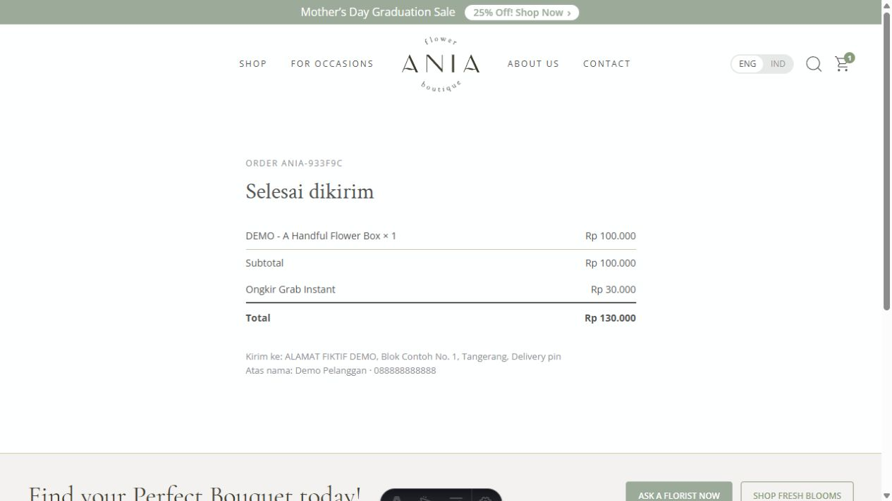
Checkout lokal, pembuatan invoice mock, callback pembayaran, tampilan paid, review tarif, booking simulasi, sinkronisasi tiga tahap, simpan fulfilled, dan tampilan akhir pelanggan berhasil dilalui dengan order yang sama. Tidak ada booking live atau pembayaran nyata.
Batas pengujian: tidak memvalidasi key live, aktivasi Order API, saldo toko, tarif/cakupan nyata, callback dari server Xendit asli, ketersediaan driver, notifikasi eksternal, atau bukti serah-terima nyata. Screenshot tetap tersimpan walaupun server demo dimatikan dan data contoh dibersihkan.